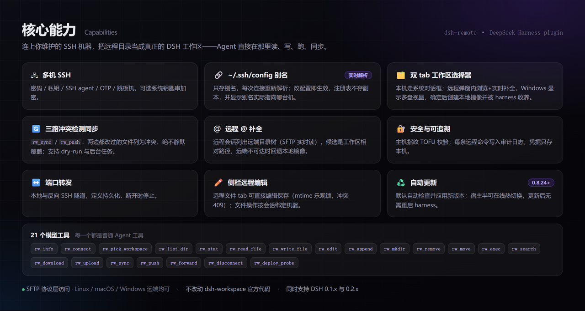
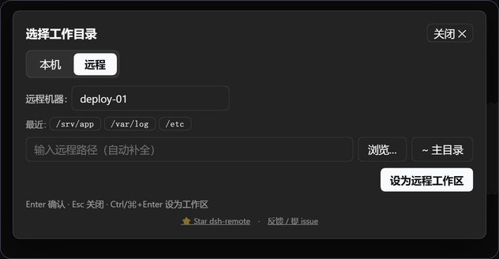
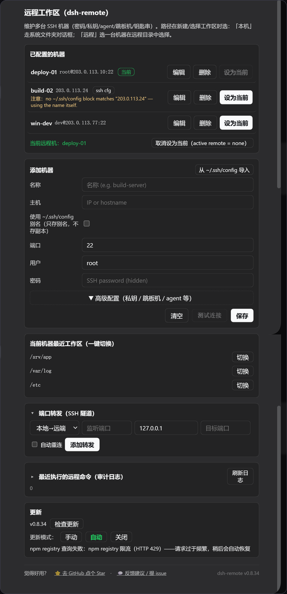

DSH 的 Web 界面刻意只监听 127.0.0.1（CLI 为安全拒绝 --host 0.0.0.0）。本插件反过来：由你主动连出到你维护的机器，通过 DSH 原生的工作区与文件流来工作——不改动 dsh-workspace 核心。
增删改并一键切换多台主机。支持密码、私钥、SSH agent、keyboard-interactive（OTP），以及 ProxyJump 跳板机。
在原生弹窗里选本地或远程工作区。远程路径走 SFTP 实时补全，逐字符延迟保持在几十毫秒级。
rw_* 工具读 / 写 / 编辑 / 追加 / 建目录 / 删除 / 移动 / stat / 执行 / 搜索 / 上传 / 下载 / 同步 / 推送 / 转发……全部是一等 Agent 工具。
三路 SFTP 同步把远程目录镜像到本地，因此 @ 文件引用、读文件工具与侧栏编辑器都能正常工作。
密码可存系统钥匙串，主机指纹做 TOFU 校验，命令记入审计日志；私钥内容永不离开你的机器。
0.8.27 起默认自动检查并应用新版本；0.8.24 起可热切换宿主半——更新后无需重启 harness。
每个能力都是普通的 Agent 工具，模型用起来和本地文件工具完全一样。
rw_inforw_connectrw_pick_workspacerw_list_dir
rw_read_filerw_write_filerw_editrw_append
rw_mkdirrw_removerw_moverw_stat
rw_execrw_searchrw_downloadrw_upload
rw_syncrw_pushrw_forwardrw_disconnect
原生的「Add workspace / 选择工作区」流程，以及多机设置面板。

rw_* 工具。

需要已安装 DeepSeek Harness。本插件是普通的 profile bundle。
# 1. 装进 web profile / add it to the web profile dsh plugin --profile web add dsh-remote # 2. 启动 harness（或先重启一次） dsh web # 以后升级 / update later dsh plugin --profile web add dsh-remote@latest
@deepseek-ai/dsh-* 的 peer 版本范围，只要有一条不匹配就整包丢弃（没有设置页、没有 rw_* 工具）。0.8.29 起改为跨线区间，同时兼容 0.1.x 与 0.2.x；请升到 0.8.29 或更高。
下面是最常用的几项；完整表（26 项）见 README 的「配置」一节——权威清单是 lib/index.js 里的 Config schema。
| 字段 | 默认 | 说明 |
|---|---|---|
host | '' |
默认 SSH 主机；留空则启动时处于断开状态。 |
updateMode | auto |
auto | manual | off —— 自更新行为。0.8.27 起默认改为 auto：加载时及每 6 小时检查 npm，随后热切换宿主半。 |
updateAutoReload | true |
更新落地后自动热切换宿主半；设为 false 则留到下次启动，设置页会提示需重启。 |
updateCheckIntervalMs | 6h |
auto 模式检查 npm 的间隔（下限 60000）。 |
auditLog | true |
把每条执行的远程命令记入本地审计日志。 |
maxOutputChars | 200000 |
单条远程命令捕获的 stdout/stderr 上限。 |